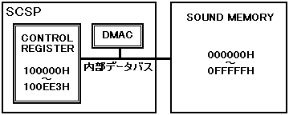

★HARDWARE Manual
★SCSPユーザーズマニュアル
★HARDWARE Manual
★SCSPユーザーズマニュアル
▲戻る
｜進む▼
SCSPユーザーズマニュアル/4.2 音源部レジスタ
■DMA転送レジスタ
- SCSP内蔵のDMAは、SCSPの内蔵のコントロールレジスタとサウンドメモリ間の転送のみ行えます。このことから、連続最長転送バイト数は3812バイト(EE4H分)となります（内部レジスタには、100000H〜100EE3Hのメモリ空間が割り当てられています）。
また、以下に説明するDMA関係のレジスタはDMA転送にて変更することを禁止します。DMA転送時、アドレスは常に増加方向に変化します。
DMA転送を実行する上での注意事項を、以下に示します。
- 注意事項
- DMA実行中は、メインCPU、サウンドCPUの動作速度が落ちる可能性があります。
- DMAコントローラのコントロールレジスタに対して、DMA転送によるアクセスは絶対禁止です。この転送を行った場合の動作は、全く保証できません。
- DMA転送は、ワード(16bit)転送です。
- DGATE(R/W) ; Dma GATE (and "0")
- DMAコントローラのブロック図を、図4.59に示します。SCSP内蔵のコントロールレジスタまたはサウンドメモリ上の任意の領域を"0"に初期化します。このビットが"1B"の時、"0"クリアを実行します
(実際にスタートさせるには、"DEXE"を実行しなければなりません)。
DGATEによる転送の消去("0"ライト)作業では、転送元のデータには影響を与えません。またデータが無くなるということもありません。
図4.59 DMAコントローラブロック図

- DDIR(R/W) ; Dma (transferring) DIRection
- DMA転送の方向を指定します。このビットが"0B"の時サウンドメモリからLSI内部レジスタへの転送、"1B"の時その逆の指定になります。
- 表4.32 DMA転送方向
| DDIR | 転送方向 |
| 0 | サウンドメモリからLSI内部レジスタへ転送 |
| 1 | LSI内部レジスタからサウンドメモリへ転送 |
- DEXE(R/W) ; Dma EXEcution
- DMA転送の開始を指示します。このビットが"1B"でDMA転送が開始されます。"0B"書き込みは無効となります。また、DMA転送が終了すると自動的に"0B"となります。
- 表4.33 DMA転送
| DEXE | 転送状態 |
| 0 | 無効または転送終了 |
| 1 | DMA転送開始 |
- DMEA[19:1](W) ; Dma MEmory start Address
- DMA転送を開始するサウンドメモリのアドレス(ワード単位)を指定します。
- DRGA[11:1](W) ; Dma ReGister start Address
- DMA転送を開始するLSI内部レジスタのアドレス(ワード単位)を指定します。
- DTLG[11:1](W) ; Dma (Transferring) LenGth
- DMA転送の転送ワード数を指定します。その際、転送元および転送先の各領域が、サウンドメモリ領域やLSI内部レジスタ領域を越えないように注意する必要があります。
▲戻る
｜進む▼
★HARDWARE Manual
★SCSPユーザーズマニュアル
Copyright SEGA ENTERPRISES, LTD., 1997